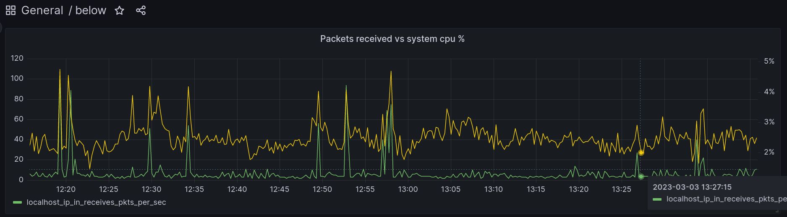

The fancy way to describe below
is “a time traveling resource monitor for modern Linux systems”. The
less fancy description is that below is pretty much like
top or htop but can persist historical data to
disk. It comes with quite a few more neat features but I’ll defer the
full explanation and demo to the previous link.
Despite having a nice TUI client to replay data, it is sometimes useful to be able to plot a graph to identify patterns. This is the main weakness (open source) below has today. Since the current $DAYJOB now has a vested interest in making below work for our production use cases, I decided to tackle the visualization weakness.
I considered a few design ideas:
Options (1) and (2) were invalidated after a day of research. They were too much work and don’t fully leverage all the amazing work that went into Grafana. Option (3) is valid, but seemed like more of a hassle to maintain than (4). Option (4) is ultimately what I ended up going with b/c it fully leverages Grafana’s power without getting off the beaten path.
Luckily for us Prometheus has fairly good backfill
support. However the only format it understands is
OpenMetrics. OpenMetrics has a fairly straightforward schema
(the overly rigorous spec notwithstanding). For example consider the
following “exposition”:
# TYPE my_gauge gauge
# HELP my_gauge Current value of the gauge
my_gauge 123 1677953705
# TYPE my_counter counter
# HELP my_counter Monotonically increasing counter
my_counter 1677953705
# EOFThe above exposition describes two metrics: my_gauge and
my_counter, where a gauge provides a point-in-time value
that can go up and down and a counter is a monotonically increasing
counter.
The # TYPE line describes the name and type of the
metric.
The # HELP line provides a human readable description of
the metric.
The sample has three parts: the name of the metric, the value, and the unix timestamp. The timestamp is optional. For backfilling we will need to always provide a timestamp.
The # EOF line terminates the exposition.
From here it’s clear that below, Prometheus, and Grafana all think about data in the same way. All that’s left is data conversion. Since below has good structured output support, it’s a fairly straightforwad but somewhat tedious exercise to munge below’s data into a text file.
I won’t bore you with the details so here’s the link to the code instead.
Once the OpenMetrics text file is generated, we can ingest the data into Prometheus using the following Prometheus CLI subcommand:
$ promtool tsdb create-blocks-from openmetrics ./path/to/input ./path/to/prom/dataHere’s what the final user workflow looks like given some
below-snapshot data at /tmp/snapshot-data:
$ git clone https://github.com/danobi/below-grafana; cd below-grafana
$ docker compose up -d
$ ./import.py /tmp/snapshot-data --begin "4h ago" --end "2h ago"The user then visits http://localhost:3000 and can start
Grafana.
Hopefully this is useful to people. I know I’ll be using it heavily in the future.
Full code is available here.